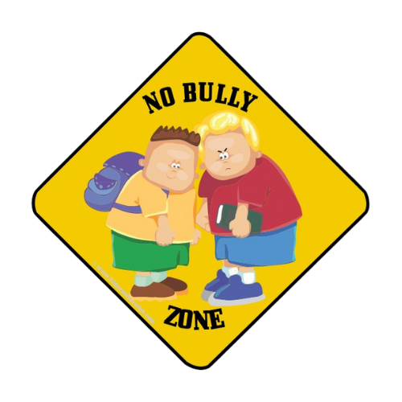

Stand up! For Yourself and Others is an anti-bullying initiative sponsored by HART (Historic Area Religions Together, an organization representing various faith communities in the Williamsburg Area) and the Williamsburg Community Foundation. The initiative was founded in October 2023. Our first activity was MLK Weekend, a presentation of the puppet show, in response to the growing concern of the effects of bullying on our children. Our mission is to help children learn to value individual differences and reduce the negative effects of anti-group bias on children in our community. As part of this initiative we are providing art and literature programs including books and puppet shows to local libraries and faith communities that teach children the importance of valuing individuality.
Stay connected with us and follow our journey on social media! Follow us on Instagram at @standupforyourselfandothers for updates and upcoming events.
To learn more about HART and their events, visit https://peninsulahart.org/ or their Facebook at https://www.facebook.com/PeninsulaHART/